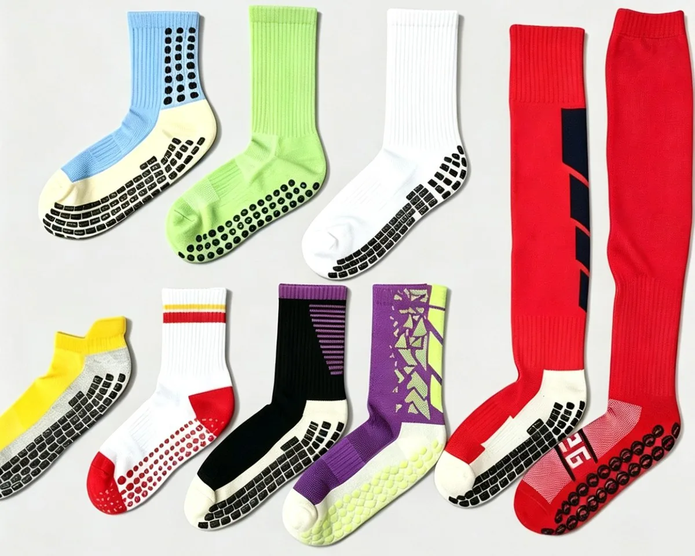

Buyer page — studios and distributors
A studio does not order four thousand pairs. It orders a hundred and fifty in a colour that has to match a wall, then reorders when the timetable grows. This page is about that order: PVC or silicone grip, a size run of three, your mark on the sock, and a first delivery small enough to try in one studio.

The order, in numbers
Eight lines. The only one that usually needs a conversation is the size split.
| Grip process | PVC as standard; silicone and flocked on request |
|---|---|
| Grip layout | Full sole, heel-to-toe strips or a repeating dot pattern |
| Minimum | 100 pairs per colour, sizes split any way inside it |
| Size run | Three sizes is normal; EU 35–46 or your own chart |
| Grip capacity | 5,000 pairs a day on one specification |
| Sample | 3–5 days after artwork approval |
| Bulk | 20 days for 1–500 pairs; rush slots available |
| Packing | Poly bag, header card, hang tag, sticker, retail box |
PVC or silicone
Silicone is the better material and the more expensive one. Most grip socks sold into studios are PVC, and price is only half the reason.
Silicone holds the sharpest dot profile and grips best on a wet floor. It is also the most expensive of the three, and on a sock a studio hands out by the hundred, that difference lands straight in the price of a class.
PVC is what most of our grip orders use. It is the most hard-wearing of the three under a daily class schedule, it prints at a dot height that stays proud of the sole rather than flattening into it, and it costs less per pair. Flocked grip is the third option: softest underfoot, quietest on a wooden floor, and the one to choose when the sock is worn barefoot and the studio has a downstairs neighbour.
Ask for silicone when the floor is polished and gets damp, or when the dot pattern is part of how the product looks rather than only how it works. Ask for PVC when the sock has to survive five classes a day and be replaced on a schedule. Both start at 100 pairs, so the decision can be sampled instead of argued.
The four failure modes of a grip sole — worn flat, lifted at the edge, bagged out, or killed by softener — are set out in why grip socks lose their grip.
What the studio buys
The same sock leaves here two ways. The choice is about who owns it at the end, and it changes the carton count.
A studio that hands socks to clients for hygiene reasons buys in bulk and wants a plain poly bag with a size sticker. The sock is a consumable, and the packing is waste the studio pays for twice — once on the invoice, once in the bin.
A studio that sells socks at the desk needs a hang tag, a barcode and a bag that survives being picked up forty times, because the sock is now retail and the label has to earn its place on the shelf.
It is worth settling before the quote rather than after. A header card changes the packing line, the carton count and the arrival date, and it is the most common reason a second order lands at a different price than the first.
Grip also makes the care line do real work. Softener leaves a film that cuts friction, and a hot tumble dry degrades the polymer, so the label is protecting the product rather than covering a warranty. What to print on the care label of a grip sock is the short version.
Your mark
Knitted into the cuff, the mark is part of the fabric and survives everything the sock survives. On a woven label, it is the cheapest option and the only one that can change without a new knitting programme. Printed on the sole, it can sit inside the grip print itself — the most interesting placement, and the one with a real limit: dots and artwork want the same surface.
Worth knowing before sampling: grip is applied after knitting and after any print, so a sock with both a printed sole and a grip sole runs two processes and cannot share one schedule. On a launch date that is the difference between a week and two.
Capacity
It matters because grip is the step that becomes the bottleneck on a repeat order, not the sock.
Five thousand pairs a day is what the grip process holds on a single specification: same dot layout, same coverage, same colour. That is a whole studio rollout in a day of grip work. Change the dot size, the coverage or the colour between runs and the line stops for a setup, which is why two colourways run back to back cost less than the same two colourways run a month apart.
The knitting and finishing in front of that step is where the calendar actually goes: twenty days for one to five hundred pairs, and a sample before it. If a chain is fitting out twelve sites, send the whole rollout rather than the first site — the second and third colourways are cheaper inside one run, and the whole thing arrives on one date.
How a first order runs
Photograph the sole of a grip sock you like, or one that gave up after a month. That tells us the process, the dot height and the coverage faster than any specification document.
Colours, placement and a price band come back before a sample is made, so a wrong turn costs a day rather than a run.
Knitted, gripped and photographed for your approval. This is the pair the bulk order will be measured against.
Grip, finishing and packing on the same schedule. Rush slots stay open when a studio opens before the socks were planned for.
Questions buyers ask
Straight answers, no sales copy.
100 pairs per colour, with the sizes split any way you choose inside that colour. A studio running three sizes can put all hundred pairs into one colourway; a distributor can take four colours at a hundred each.
Silicone gives the sharpest dot profile and the best grip on a wet floor. PVC wears longest and costs least, which is why most grip socks sold into studios are PVC. Flocked is the softest and the quietest on a wooden floor. All three start at the same minimum, so the honest way to choose is to sample one of each rather than argue about it.
The print holds if the surface was clean and the cure was complete — both are set at the print line, not at the yarn — and we check adhesion before the pair is bagged. What kills grip faster than washing is fabric softener and high-heat tumble drying, which is why the care label matters more on this product than on a plain sock.
It can be printed with the grip, and it is the most interesting place for it — with one constraint. Dots and artwork share the same square centimetres, so a dense logo and a dense dot pattern cannot both be at full strength. Send the artwork and the coverage you want, and the trade-off is shown at mock-up stage rather than at bulk.
Poly bag, header card, hang tag, sticker, retail box and barcode label, finished in the same building as the sock. A studio handing socks out for hygiene reasons usually wants a plain bag and a size sticker; a studio selling them at the desk needs the tag and the barcode. Decide before the quote, because packing changes the carton count.
EXW, FOB, CIF and DDP are all quoted, per order. DDP puts freight and duty inside one number through a forwarder, which is usually what a studio chain wants on a first import. The Europe page covers the labelling and packaging questions that come with it.
Buying by situation
Same factory, different order shapes.
A photo of a sole and the sizes you need is enough for a price band and a mock-up date. If PVC is the wrong material for your floor, we will say so before you order.